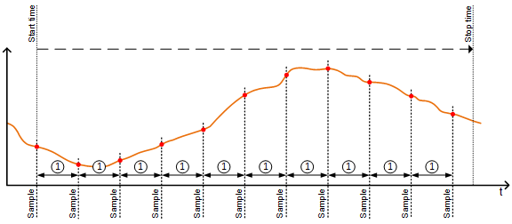
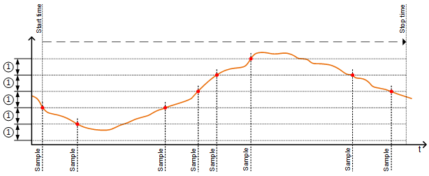
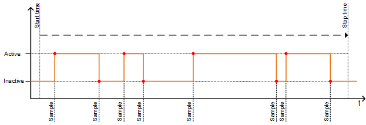
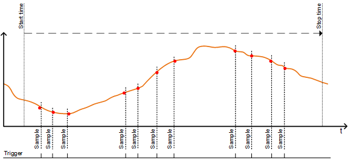
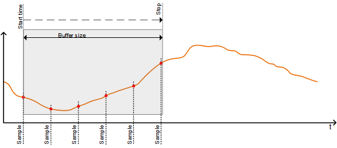
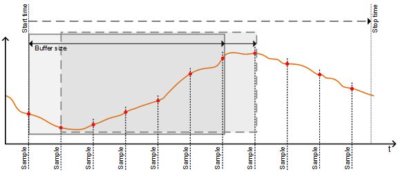

趋势记录
趋势数据提供有关楼宇自动化和控制系统过程的重要信息。例子：
- Monitoring control for optimization
- Recording the room temperature relating to the entered setpoint
- Recording the temperature and humidity for the demanding requirements of the Pharma business
可以对不同 BACnet 对象类型的当前值进行趋势分析。
趋势是在适用的 BACnet 对象上设置的。通过“启用趋势”=“是”启用该功能。实例化一个附加对象来控制实际趋势，并显示该对象所需的 BACnet 属性。
可以在 ABT 站点中编辑 BACnet 对象及其属性。
这种类型的趋势是离线的。这些值被写入缓冲区并定期检索，例如由 Desigo CC 进行检索。
Functioning and the most important trend settings
可用于适用 TRENDLOG 对象的 BACnet 属性列于object types(e.g. AI, AO, BI, BO, MI, MO, value objects).
Enable Trend
“启用趋势”（“是”/“否”）启用或禁用趋势功能并显示所需的 BACnet 属性。
Enable trending
“启用趋势”允许趋势开始。
Start and stop trending
启用的趋势从设置的“开始时间”开始，到设置的“停止时间”结束。默认情况下，这些时间是不活动的（即通配符）。
Logging type
“记录类型”确定是否循环保存值或更改值 (COV)。
设置“记录类型”=“轮询”会按照“记录间隔”中设置的时间间隔连续记录对象的值。

①“记录间隔”
设置“记录类型”=“COV”（值更改）记录当前值的每次更改的新值。一旦最后记录的值大于“值更改，COV”，就会进行记录。

①“值变化，COV”（记录所需的偏差）
设置“记录类型”=“COV”通常用于记录二进制信号或多态信号的状态变化。

如果设置“日志记录类型”=“已触发”，则 TrendLog 对象会在发生触发时记录趋势属性。记录完成后，它会自动将触发器属性的值重置为 FALSE，并等待另一个事件来开始趋势日志数据记录过程。通过此设置，您可以确保根据定义的触发器进行准确且受控的数据收集。

Buffer memory
这些值被写入缓冲存储器。 “缓冲区大小”决定可以将多少值保存到缓冲区内存中。设置“如果已满则停止”确定缓冲区已满时如何继续。
设置“满则停止”=“是”：
一旦缓冲存储器已满，趋势就会停止。

设置“满则停止”=“否”：
以完整缓冲区继续。最旧的值将被最新值覆盖 (FIFO)。

例如，Desigo CC 可以使用设置“通知阈值”来通知缓冲区即将满并且需要检索数据点。
Example for determining the buffer size:
必须设置“缓冲区大小”以确保有足够的内存来临时存储趋势数据，例如周末由于 Desigo CC 自动轮询数据故障而导致的趋势数据。换句话说，对于例如趋势持续时间72[小时]。
每 5 [min] 循环轮询一次值时，必须保存 864 个值。
Determine intervals
设置“对齐间隔”确定定期轮询间隔是否在特定秒、分钟、小时或天的开始处对齐。该设置对于“日志记录类型”=“COV”没有影响。
这确保了可以同时保存并比较多个同时发生的趋势日志中的值。
只能对秒、分钟、小时或天的整数倍 (1…x) 进行对齐。
Interval offset
“间隔偏移”设置（以百分之一秒为单位）允许分散周期性趋势日志。
对于大量活动趋势日志，这可以防止同时轮询所有值的情况。投票可以通过分组进行细分。
仅当设置“对齐间隔”=“是”时，“间隔偏移”才处于活动状态。
Notification threshold
通知阈值确定缓冲区何时发送检索数据的请求。
一旦达到设定的数据条目数，就会发送事件通知，以便管理站检索数据。检索后数据点将从缓冲区中删除。
Trend limitations
每个设备临时保存的值的最大数量以及所有缓冲存储器的输入变量的总和为limited.